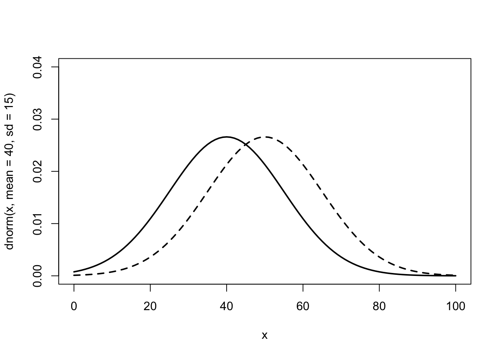

正規分布
正規分布とは
左右対称のツリガネ型で，頂点の位置の値が平均となる分布
正規分布の表し方
\(\mu\)を平均値，\(\sigma\)を標準偏差とすると以下の式で表される
\[ N(\mu, \sigma^2) \] また，確率変数\(X\)が一次元正規分布に従う場合，\(X \sim N(\mu, \sigma^2)\)と表記する
正規分布の性質
- 正規分布は左右対称
\[ 最頻値=平均値=中央値 \]
- 平均変化 -> 左右にシフト
- 標準偏差変化 -> 山の形が変化

平均が40から50に変化した正規分布
標準偏差が15から30に変化した正規分布
正規分布と確率の関係
\(a\)から\(b\)の区間にデータが存在する確率変数\(X\)を以下のように表す
\[ P(a \leq X \leq b) \]
このとき，\(X\)が正規分布に従っているとすると，以下のような関係になる
\[ P(\mu - \sigma \leq X \leq \mu + \sigma) \approx 68.268 \% \]
\[ P(\mu - 2\sigma \leq X \leq \mu + 2\sigma) \approx 95.450 \% \\ \]
Zスコア
\[ P(\mu - k\sigma \leq X \leq \mu + k\sigma) \]
における確率は，標準偏差\(\sigma\)の係数\(k\)に依存する
このとき，\(k\)は標準正規分布におけるZスコアという
- 個々のデータ点\(x_i\)が，平均値\(\mu\)から標準偏差\(\sigma\)の何倍離れているかを示す指標
- Zスコアの絶対値が大きいほど、データ点\(x_i\)は平均値\(\mu\)から遠い
- 標準偏差\(\sigma\)の係数\(k\)が大きくなるほど，平均値\(\mu\)からの値の範囲が広がり，その範囲内にデータが存在する確率が高くなる
\[ z_i = \frac{x_i - \mu}{\sigma} \]
標準正規分布
\(\mu = 0, \sigma = 1\)の正規分布を標準正規分布という
\[ N(0, 1^2) \]
正規分布と標準正規分布の関係
元の分布が正規分布ならば，標準正規分布\(N(0, 1^2)\)に変換できる．この変換を標準化という
与えられた\(x_o\)に対し，\(z_0 = \frac{x_0 - \mu}{\sigma}(\sigma>0)\)と定めると， \(N(\mu, \sigma^2)\)の世界での\(P(X \leq x_0)\)は\(N(0, 1^2)\)の世界での\(P(Z\leq z_0)\)となる
\[ P(X \leq x_0) = P\left( \frac{X - \mu}{\sigma} \leq \frac{x_0 - \mu}{\sigma} \right) = P(Z \leq z_0) \]
標準正規分布におけるZスコア，確率の求め方
確率からZスコアを求める
信頼度95%のZスコア
- 両側検定：信頼区間は通常量側検定に基づいて計算される．つまり，分布の両端に\(2.5\%\)ずつの領域を残す
- 片側検定：従って探す確率は\(1-(\frac{0.05}{2}) = 0.975\)となる
- Zスコアの取得
qnorm(0.975)[1] 1.959964よって，
\[ P(\mu - 1.96\sigma \leq X \leq \mu + 1.96\sigma) \approx 0.95 \]
Zスコアから確率を求める
\(z_0 = 2.58\)の確率
pnorm(2.58)[1] 0.99506よって，
\[ P(\mu - 2.58\sigma \leq X \leq \mu + 2.58\sigma) \approx 0.99 \]
偏差値
あるデータが正規分布に従っていると仮定して，それぞれの平均値\(\mu\)，標準偏差\(\sigma\)に変換したもの
データ\(X_i\)の偏差値\(v_i\)は以下の式で示される
\[ v_i = 50 + 10 \times \frac{x_i - \mu}{\sigma} = 50 + 10 z_i \]
あるテストの点数の偏差値を計算しよう
# 平均 70 標準偏差 15 の正規分布に従う乱数を 10 個生成し，小数点以下を四捨五入
set.seed(123)
scores <- rnorm(10, mean = 70, sd = 15)
scores <- round(scores, 0)
print(scores) [1] 62 67 93 71 72 96 77 51 60 63# 各点数から平均値を引き，標準偏差で割ることで標準化
# 10 を掛けて 50 を足すことで，平均 50 標準偏差 10 のスケールに変換
deviation_scores <- 10 * (scores - mean(scores)) / sd(scores) + 50
print(deviation_scores) [1] 43.54393 47.05266 65.29809 49.85965 50.56140 67.40333 54.07013 35.82471
[9] 42.14043 44.24567QQプロットとは
2つのデータセットの分位点を比較することで，それらの分布の類似性を視覚的に評価する手法
また，横軸のデータを正規分布にしたQQプロットを正規QQプロットという．
QQプロットの描画
データの準備
今回は正規分布とt分布を使用
# 必要なパッケージ
library(ggplot2)
# サンプルデータ生成
set.seed(123)
n <- 100
normal_data <- rnorm(n)
t_data <- rt(n, df = 3) # 自由度 3 のt分布
# データフレーム作成
df <- data.frame(
Data = c(normal_data, t_data),
Distribution = factor(rep(c("Normal", "t(df=3)"), each = n))
)QQプロットの描画
# ggplot2でQQプロットを作成
ggplot(df, aes(sample = Data, color = Distribution)) +
stat_qq() +
stat_qq_line() + # 標準正規分布に対応する基準線
facet_wrap(~ Distribution) + # 分布ごとに分割
labs(title = "QQ Plots for Different Distributions",
x = "Theoretical Quantiles",
y = "Sample Quantiles") +
scale_color_manual(values = c("Normal" = "blue", "t(df=3)" = "green")) + # 色指定
theme_bw() +
theme(legend.position = "bottom") # 凡例の位置